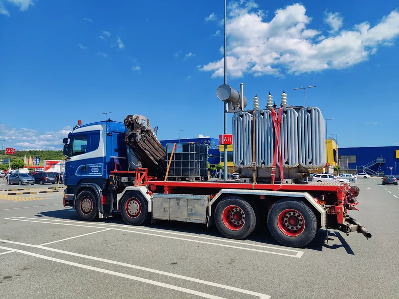

Prilikom preuzimanja vašeg transformatora dovozimo naš zamenski transformator i privremeno ga postavljamo dok se vaš popravlja. Tako nastavljate korišćenje električne energije bez dugih neradnih pauza.
Moguće je koristiti i kompletnu zamensku transformatorsku stanicu, koju povezujemo na vaše napajanje i potrošače.
Transformatori se koriste u skladu sa preporukama proizvođača, preporukama EPS-a, standardima i važećim zakonima.
Istovremeno radimo sva neophodna prilagođavanja za postavljanje zamenskog transformatora:
